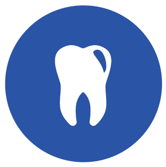

Servicios Odontológicos
-

Odontológia General
Es la encargada de solucionar los problemas primarios que tienen que ver con la boca, dientes y otras estructuras relacionadas. Representa el contacto inicial del paciente
-
Endodoncia
se trata de un tratamiento de los conductos radiculares o raíces del diente, en el que se procede a la extracción total de la pulpa dental.
-
Odontopediatria
es la rama de la odontología encargada de tratar a los niños desde su nacimiento.proporcionando atención especializada, desde la infancia hasta más allá de la adolescencia.
-
Rayos X
Ofrecemos los servicios de radiografías dentales a precios y paquetes totalmente accesible
-
Prótesis Dentales
Es un elemento artificial que sirve para restaurar la anatomía de uno o varios dientes, consiguiendo que el paciente recupere la funcionalidad y estética de su dentición.
-
Ortodoncia
Es una especialidad de la odontología que se encarga de la corrección de los dientes y huesos posicionados incorrectamente.
-
Blanqueamientos
es un tratamiento de odontología estética que tiene por objetivo eliminar las manchas dentales y hacer que la dentición adquiera una tonalidad más blanca y brillante.
-
Cirugías
Las cirujias de cordales o de agrandamiento de diente, asi como extracciones, totalmente hecho por profesionales altamente capacitados